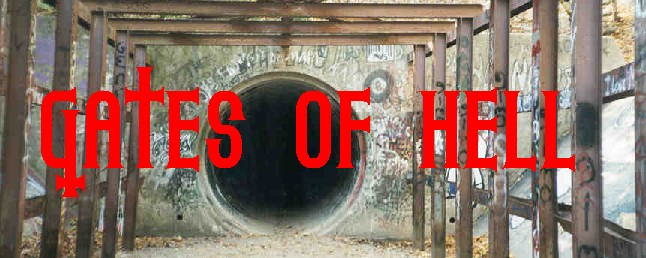
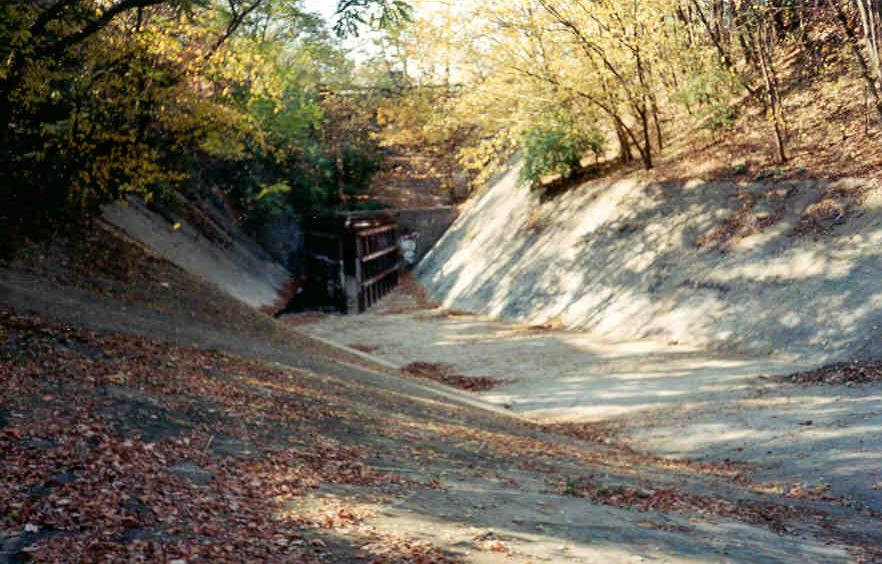
Although brief, and really only a culvert under North High Street, the Gates of Hell have gained something of a reputation among Columbus urban explorers. The reason, I think, is first of all because of their appearance: the huge metal gates that point out from the mouth in the football field-size runoff area give the Gates of Hell a unique appearance.
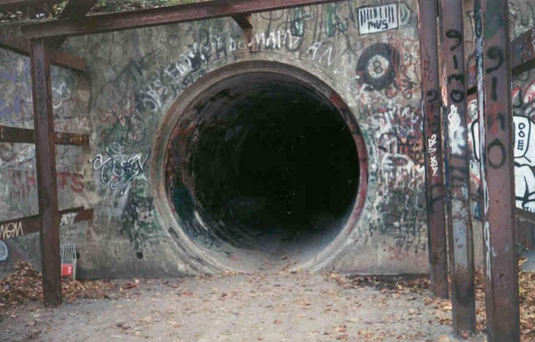
Once inside, the tunnel cuts abruptly to the right and then to the left again, making it pitch black in the middle, even in the daytime.
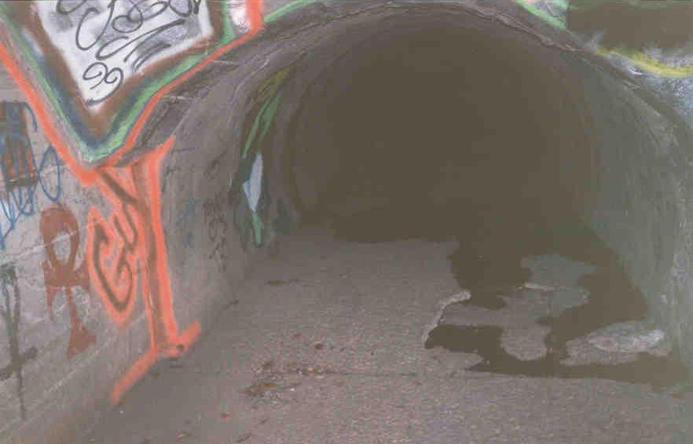
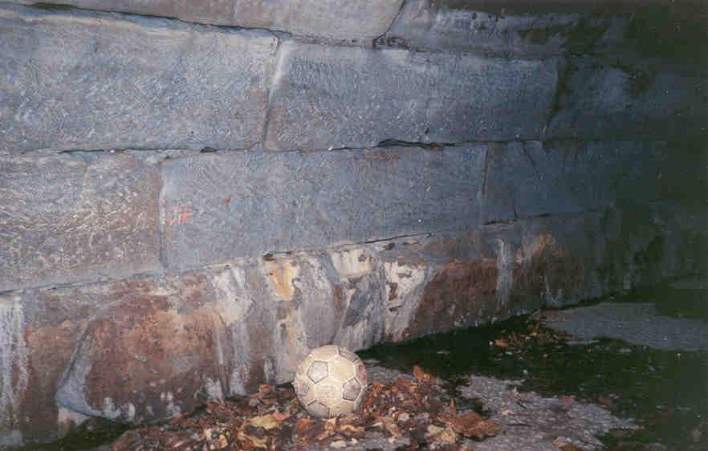
There is some nice graffiti inside the tunnel; this one made me jump when I first saw it. I recently heard from the guy who painted this down here: Bones, a talented artist and all-around nice guy. I must admit this is some inspired work, positioned in just the right place to scare you when you're too far into the tunnel to escape from any determined murderer.
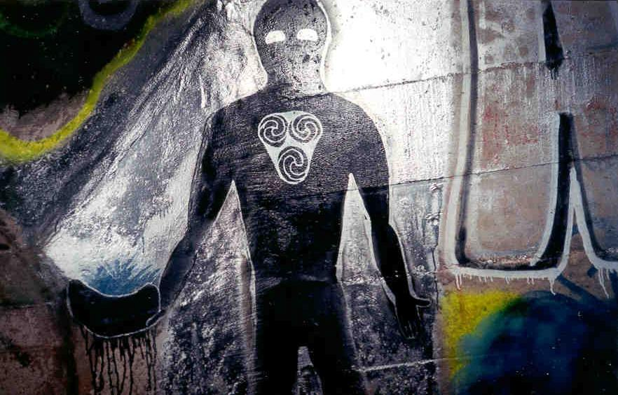
After that it starts getting light again. The tunnel also becomes rectangular instead of round.
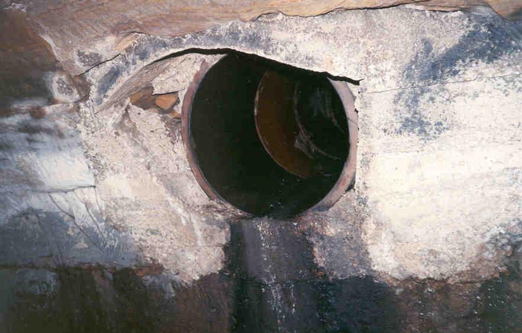
The Gates of Hell empties its little creek into the Olentangy, which is visible when you exit.
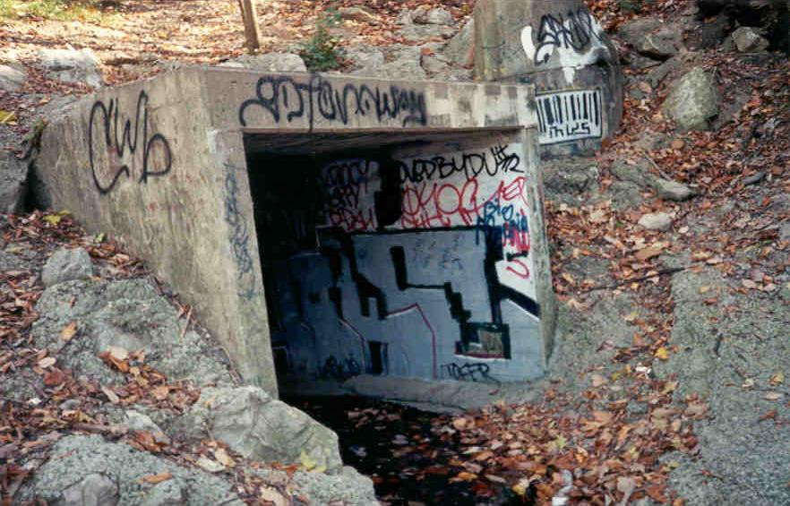
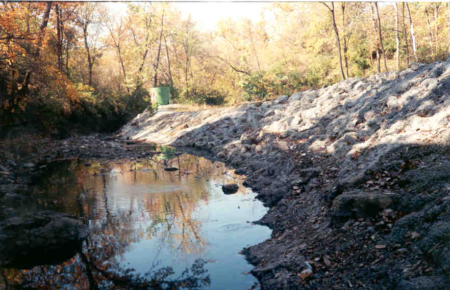
Very cool, especially at night. Also a favorite of skaters, for obvious reasons; not only is it an extremely fun and challenging half-pipe design, it's so hidden it's nearly impossible to keep an eye on. Rookie and I explored this one in the late fall. To get there, park behind the Tim Horton's on the east side of High Street, just north of campus. It's hard to miss.
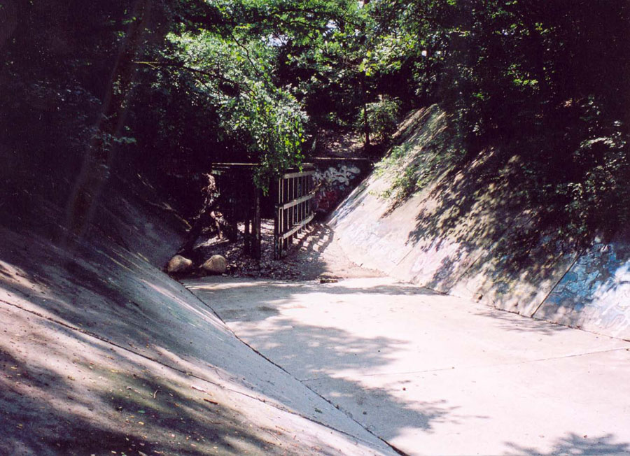
The last photo here was taken at the end of July, 2006--fully seven years after I took the other photographs. It gives you an idea how little changes down here. It's a summer photo, which accounts for the excessive amount of washed-down crap caught in the gates from the spring rain. Check it out sometime.
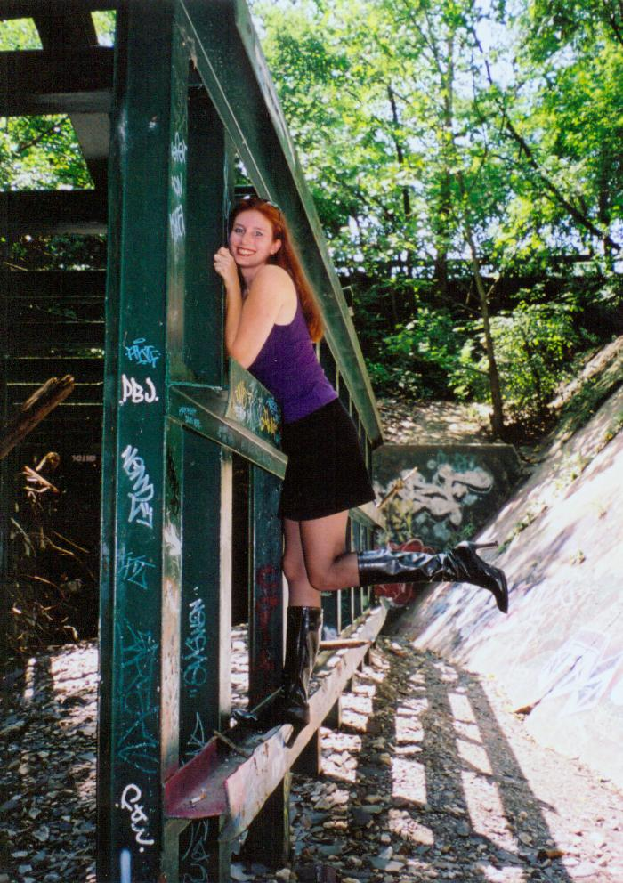
Back
forgottenohio@yahoo.com